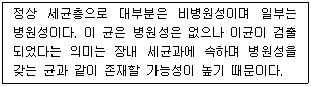

식품산업기사 (2012-05-20 기출문제)
1과목: 식품위생학
1. 식품의 변질에 대한 설명 중 맞지 않는 것은?
- 부패는 단백질 성분이 미생물의 작용으로 분해되어 Amine류, 암모니아, H2S, Mercptane을 형성하여 악취를 발생시키는 것을 말한다.
- 발효는 탄수화물이 산소가 존재하는 조건에서 미생물의 작용을 받아 유기사이나 알코올을 생성하는 것을 말한다.
- 산패는 지방이 산소에 의해 산화되어 산성을 띠며, 악취가나고 변색되는 현상을 말한다.
- 변패는 미생물 등에 의해 식품 중의 탄수화물이나 지방이 변질되는 현상을 말한다.
(정답률: 60%)

2. 식품에 항생물질이 잔류할 때 일어날 수 있는 문제점과 거리가먼 것은?
- 알레르기 증상의 발현
- 항생제 내성균의 출현
- 급성중독으로 인한 식중독 발생
- 감염증의 변모
(정답률: 77%)
3. 다음에서 설명하는 미생물은?

- 살모넬라
- 대장균
- 곰팡이
- 포도상구균
(정답률: 86%)
4. 다음 플라스틱 중 가장 가볍고 내열성이 매우 우수하며, 110℃ 이상에서 멸균이 가능한 것은?
- Polypropylene
- Vinylidene Chloride
- Styrol
- Polyetylene
(정답률: 66%)
5. 해수 및 플랑크톤, 어패류에 분포하고 있으며, 중독시 콜레라와 비슷한 증상이 나타나는 식중독 원인세균은?
- 대장균
- 장염비브리오균
- 살모넬라균
- 시겔라균
(정답률: 90%)
6. 비브리오패혈중에 대한 설명으로 맞지 않는 것은?
- 원인균은 V.Parahaemolyticus 이다.
- 간 질환자나 당뇨환자들이 걸리기 쉽다.
- 전형적인 증상은 무기력증, 오한, 발열 등 이다.
- 원인균은 감염성이 매우 높다.
(정답률: 71%)
7. 황색포도상구균에 의한 식중독을 야기하는 식품으로 염지육제품과 관련되어 있다. 그 원인과 관련된 황색포도상구균의 특징으로 가장 합당한 것은?
- 다른 미생물들과 공존시 낮은 경쟁력(a Poor Competitor)
- 높은 미생물 오염도
- 육제품에서 높은 성장 능력
- 독특한 Peptidoglycan층
(정답률: 56%)
8. 식물성 독성으로 독소와 식품의 연결이 잘못된 것은?
- 무스카린(Muscarine) - 버섯
- 솔라닌(Solanine) - 감자
- 아미그달린(Amygdalin) - 피마자
- 고시폴(Gossypol) - 목화씨
(정답률: 86%)
9. Cholinesterase의 작용을 억제하여 혈액과 조직 중에 생기는 유해한 Acetylcholine을 축적시켜 중독증상을 나타내는 농약은?
- 유기인제
- 유기염소제
- 유기불소제
- 유기수은제
(정답률: 67%)
10. 식품 등의 표시에 대한 설명으로 맞지 않는 것은?
- 유통기한은 소비자에게 판매가 허용되는 기한을 말한다.
- 소분판매하는 제품은 소분가공을 한 날이 제조연월일이다.
- 품질유지기한은 식품의 특성에 맞는 적절한 보존방법이나기준에 따라 보관할 경우 해당식품 고유의 품질이 유지될 수 있는 기한이다.
- 제조연월일은 포장을 제외한 더 이상의 제조나 가공이 필요하지 아니한 시점이다.
(정답률: 85%)
11. 카드뮴 중독의 특징으로 옳게 설명한 것은?
- 미나마타병의 원인 물질이다.
- 신경장애가 나타난다.
- 중년의 남성에게서 주로 발생한다.
- 광산폐수에 의한 발생이 많다.
(정답률: 68%)
12. 일반세균수 검사에서 세균수의 기재보고 방법으로 틀린 것은?
- 일반적으로 표준평판법에 의해 검체 1mL중의 세균수를 기재한다.
- 유효숫자를3단계로 끊고 그 이하를0으로 한다.
- 1평판에 있어서의 집락수는 상당 희석배수로 곱한다.
- 숫자는 높은 단위로부터 3단계에서 반올림한다.
(정답률: 67%)
13. 저장식품에 흔히 볼 수 있으며, 가장 광범위하게 볼 수 있는 진드기류는?
- 긴털가루진드기
- 보리가루진드기
- 작은가루진드기
- 설탕가루진드기
(정답률: 74%)
14. 위해물질인 Bisphenol의 사용용도가 아닌 것은?
- 폴리카보네이트수지
- 농약첨가제
- 플라스틱강화제
- 질산염
(정답률: 74%)
15. 동물에게는 유산, 사람에게는 열병을 일으키는 인수공통감염병은?
- 파상열
- 야토병
- 탄저병
- Q열
(정답률: 87%)
16. 우유와 관련된 시험 중에서 저온살균이 완전히 이루어졌는가의 여부를 검사하는 방법은?
- 메틸렌블루(Methylene Blue)환원시험
- 포스파테이즈(Phosphatase)검사법
- 브리드씨법(Breed's Method)
- 알코올 침전시험
(정답률: 65%)
17. 바이러스성 인수공통감염병인 인플루엔자 (Influenza)에 대한설명이잘못된것은?
- RNA바이러스로 공기감염을 통해 감염도 가능하다.
- 바이러스의 최초 분리는 1933년이며, A,B,C형이 있다.
- 인플루엔자 바이러스는 저온, 저습도에서 주로 발생한다.
- 주요병변은 소화기계에 국한되어 발생한다.
(정답률: 70%)
18. 다음 중 대장균군의 특성인 것은?
- 그람 양성 무포자 간균
- 분변세균의 오염지표
- 편성 혐기성 세균
- 내열성이 강함.
(정답률: 74%)
19. 식품의 방사선 조사 처리에 대한 설명으로 맞지 않는 것은?
- 외관상 비조사식품과 조사식품의 구별이 어렵다.
- 극히 적은 열이 발생하므로 화학적 변화가 매우 적은 편이다.
- 저온, 가열, 진공 포장 등을 병용하여 방사선 조사량을 최소화하려고 시도하고 있다.
- 투과력이 약해 식품 내부의 살균은 불가능하다.
(정답률: 92%)
20. 다음 중 식품에 직접 포장하여 식품과 함께 먹을 수 있는 포장재료는?
- Amylose Film
- Aluminium Foil
- Cellophane
- Polyethylene
(정답률: 86%)
2과목: 식품화학
21. 노화에 대한 설명으로 맞지 않는 것은?
- 2 ~ 5℃ 에서는 물분자 간의 수소결합이 안정되어 노화가 잘 일어난다.
- 노화는 수분함량이 많으면 많을수록 잘 일어난다.
- pH에 영향을 받아 강산성 상태에서는 노화가 촉진된다,
- Amylopectine의 함량이 많을수록 노화가 억제된다.
(정답률: 68%)
22. 식품의 조리, 가공 또는 저장 중에 가장 손실이 큰 비타민은?
- 비타민A
- 비타민D
- 비타민C
- 비타민E
(정답률: 70%)
23. 액체 속에 기체가 분산되어 있는 콜로이드 식품이 아닌 것은?
- 맥주
- 수프
- 사이다
- 콜라
(정답률: 91%)
24. 다음 중 환원당 정량방법은 어느 것인가?
- kjeldahl법
- Bertrand법
- Karl Fischer법
- Soxhlet법
(정답률: 64%)
25. 1N NaOH 용액1L에 녹아있는 NaOH의 중량은?
- 30g
- 35g
- 40g
- 50g
(정답률: 69%)
26. 유지의 산패를 촉진하지 않는 것은?
- 산소
- 광선
- 금속, 이온
- 토코페롤
(정답률: 83%)
27. 쌀 1g을 취하여 질소를 정량한 결과, 질소가 1.5%일 때 쌀 중의 조단백질 함량은? (단, 질소계수는 6.25로 가정한다.)
- 약 8.4%
- 약 9.4%
- 약 10.4%
- 약 11.4%
(정답률: 70%)
28. 유화제(Emulsifying Agent)의 설명 중 틀린 것은?
- 구조 내 친수기와 소수기가 있다.
- 천연유화제는 복합지질들이 많다.
- 유화액의 형태에 영향을 준다.
- 가공식품의 산화를 방지하는 식품첨가물이다.
(정답률: 76%)
29. 젤(gel)화된 콜로이드 식품은 어느 것인가?
- 전분액
- 우유
- 삶은 달걀(반고체)
- 된장국
(정답률: 83%)
30. 시험관에 전분 0.1g과 증류수 5m 를 가하고 가열하여 전분을 호화시킨 후 5N H2SO4 용액 2mL 를 가하고 가열하면서 1분 간격으로 이 용액 1방울을 채취하여 요오드액 1방울과 반응시켜 그 반응색을 확인하면서 이 조작을 약 20분 정도 계속하였다. 처음 1분간 채취한 용액과의 요오드액 반응색은?
- 무색
- 황색
- 적색
- 청색
(정답률: 59%)
31. 식품가공 중에 아크릴아미드(Acrylamide)의 발생을 일으키는 물질들로 바르게 묶인 것은?
- 탄수화물과 지방
- 지방과 단백질
- 단백질과 탄수화물
- 물과 탄수화물
(정답률: 58%)
32. 녹차음료수를 마시면 가장 많은 양을 섭취하게 되는 플라보노이드(Flavonoid)는?
- Isoflavone
- Retinoid
- Anthocyanin
- Flacan-3-Ol
(정답률: 52%)
33. 식품의 색을 분류하는 체계에 해당되지 않는 것은?
- CIE체계
- Henning 체계
- Hunter 체계
- Munsell 체계
(정답률: 58%)
34. 감압가열건조법에 의하여 식품 중의 수분함량을 정량할 때 적당한 온도는?
- 80~90℃
- 100~110℃
- 150~160℃
- 200~210℃
(정답률: 40%)
35. 요오드 정색반응에 청색을 나타내는 덱스트린(Dextrin)은 어떤 것인가?
- 아밀로덱스트린(Amylodextrin)
- 에리스로덱스린(Erythrodextrin)
- 아크로모덱스트린(Achromodextrin)
- 말토텍스트린(Maltodextrin)
(정답률: 85%)
36. 단백질 분자 내에 티로신(Tyrosine)과 같은 페놀잔기를 가진 아미노산에 의해서 일어나는 정색반응은?
- 밀론(Millon) 반응
- 뷰렛(Biuret) 반응
- 닌히드린(Ninhydrin) 반응
- 유황반응
(정답률: 66%)
37. 산패가 가장 빨리 일어나는 것은?
- 라우르산(Lauric acid)
- 스테아르산(Stearic acid)
- 리놀레산(Linoleic acid)
- 팔미트산(Palmitic acid)
(정답률: 69%)
38. 염장 초기의 식품에 있어서 자유수, 결합수의 양은 어떻게 변화하는가?
- 전체 수분에 대한 자유수의 비율은 감소하고 결합수의 비율은 증가한다.
- 전체 수분에 대한 자유수의 비율은 증가하고 결합수의 비율은 감소한다.
- 전체 수분에 대한 자유수의 비율은 증가하고 결합수의 비율도 증가한다.
- 전체 수분에 대한 자유수의 비율은 감소하고 결합수의 비율도 감소한다.
(정답률: 75%)
39. 천연계 색소 중 당근, 토마토, 새우 등에 주로 들어 있는 것은?
- 카로티노이드
- 플라보노이드
- 엽록소
- 베타레인
(정답률: 87%)
40. 식품의 레올로지 특성 중 유체의 흐름에 대한 저항을 무엇이라 하는가?
- 점성
- 탄성
- 소성
- 점탄성
(정답률: 70%)
3과목: 식품가공학
41. 녹색채소를 삶을 때 색을 고정하기 위해 사용하는 것은?
- CuSO4
- NaHSO3
- CaCl2
- MgCl2
(정답률: 69%)
42. 정치법으로 유지의 협잡물을 제거할 때 사용되는 대표적인 흡착제는?
- 삼베
- 가열
- 목탄
- 산성백토
(정답률: 79%)
43. 시유의 살균시 HTST법에 적당한 온도는?
- 60~65℃
- 70~80℃
- 90~100℃
- 100~130℃
(정답률: 57%)
44. 원유가격을 결정하는 요인과 거리가 먼 것은?
- 체세포수
- 지방함량
- 세균수
- 유당함량
(정답률: 52%)
45. 축산물 가공시 식염으로 재제염이나 정제염이 아닌 천일염으로 염수를 제조하고자 할 때 사용하는 방법은?
- 합성항균제를 첨가하여 처리한다.
- 이물이 제거될 수 있도록 충분히 정제한다.
- 저온장 시간 살균 후 사용한다.
- 입자를 미세화하기 위한 균질공정을 거쳐야한다.
(정답률: 43%)
46. 신선한 달걀의 등급 결정과 관계가 먼 것은?
- 난각의 상태
- 달걀의 비중
- 기실의 크기
- 난황의 색깔
(정답률: 68%)
47. 당도 10도의 과실을 원료로 하여 당도 20도의 통조림제품을 만들려면 처음 조제하는 당액의 당도는? (단, 통조림규격 총량 450g, 고형물200g)
- 25
- 26.5
- 28
- 30.5
(정답률: 41%)
48. 고기의 숙성에 대한 설명으로 맞지 않는 것은?
- 도살 후 고기의 pH 변화는 주로 젖산이나 인산의 생성 때문이다.
- 고기의 글리코겐 함량은 숙성 중에 변하지 않는다.
- 산소의 공급이 충분한 경우에는 젖산 생성량이 적어진다.
- 고기의 숙성은 온도가 높아지면 빨리 진행된다 .
(정답률: 82%)
49. 유지의 탈색공정 방법으로 사용되지 않는 것은?
- 수증기 증류법
- 활성백토법
- 산성백토법
- 활성탄법
(정답률: 72%)
50. 시유 제조공정 중 크림층의 형성을 방지하고, 지방구를 세분화시켜 소화율을 높이고, 우유 단백질을 연성화시키는 목적으로 하는 공정은?
- 표준화(Standardization)
- 연압(Working)
- 균질화(Homogenization)
- 살균(Pasteurization)
(정답률: 88%)
51. 난황계수가 0.42 이고 난황의 폭이 3.5cm일때 난황의 높이와 신선도의 판별 결과는?
- 높이 0.147cm 이고 부패란이다.
- 높이 0.83cm 이고 신선란이다.
- 높이 1.47cm 이고 신선란이다.
- 높이 0.83cm 이고 부패란이다.
(정답률: 81%)
52. 두부를 만들었더니 두부에 줄기가 생기고 맛도 좋지 않았다. 그 원인은 무엇때문인가?
- 응고제의 양이 너무 많았다.
- 응고온도가 너무 높았다.
- 수분함량이 너무 적었다.
- 가열시간이 너무 길었다.
(정답률: 74%)
53. 코지(Koji)식의 고추장의 제조 공정에 관한 설명으로 틀린 것은?
- 제국의 온도는 32~33℃이다.
- 원료는 Koji, 고춧가루, 소금, 물이다.
- 숙성온도는 30℃ 내외로 유지한다.
- 원료는 콩류를 주로 사용한다.
(정답률: 59%)
54. 환경기체조절 포장법(Modified Atmosphere Packaging)의 사용기체로 적합하지 않은 것은?
- 질소(N2)
- 헬륨(He)
- 산소(O2)
- 이산화탄소(CO2)
(정답률: 72%)
55. 원유 중의 찌꺼기를 제거하는 방법이 아닌 것은?
- 장시간 방치하는 침전법
- 가압 여과기를 이용하는 방법
- 원심분리에 의한 방법
- 고온 여과기를 이용하는 방법
(정답률: 59%)
56. 식품의 유통기한 설정 실험의 원칙으로 맞지 않은 것은?
- 해당제품의 특성을 충분히 반영하여 실험을 수행하여야 한다.
- 한 제품이 별도로 포장된 2가지 이상의 식품으로 구성된 경우 각 구성식품에 대해 적합한 지표를 선정하여야 한다.
- 실험담당자는 실험의 내용, 시약, 기구, 시설, 기초자료, 검체 등에 대하여 해당관청으로부터 인정받은 경우 내부점검이 면제된다.
- 모든 실험은 원칙적으로 가속시험 및 수학적 모델의 적용이 가능하나 제품의 실제 유통조건 하에서의 유통기한 예측이 충분히 가능하도록 실시하여야 한다.
(정답률: 80%)
57. 고추장을 신맛으로 만드는 대표적인 원인균은?
- 초산균
- 황국균
- 젖산균
- 잡균
(정답률: 73%)
58. 죽순을 100℃에서 1시간 가열한 후 물에 침지하는 목적은?
- Hesperidin을 제거하기 위하여
- Tyrosine을 제거하기 위하여
- 가용성 물질을 제거하기 위하여
- 과당을 제거하기 위하여
(정답률: 54%)
59. 일반적인 달걀의 구성이 아닌 것은?
- 난각
- 난황
- 난백
- 기공
(정답률: 87%)
60. 젓갈 제조에 솔비톨을 사용하는 가장 적합한 이유는?
- 자극적인 신맛을 겸한 상쾌한 맛을 부여하기 위해서
- 내열성 효모의 생육을 억제하기 위해서
- 고유의 색조를 유지, 발현시키고 퇴색, 변색을 방지하기 위해서
- 적당하게 수분을 유지하고 소금 결정을 방지하기 위해서
(정답률: 52%)
4과목: 식품미생물학
61. 현미경 취급법 중 잘못된 것은?
- 고배율을 보기 위하여 저배율로 관찰한다.
- 조동나사로 상을 찾고 미동나사로 밝은 상을 찾는다.
- 렌즈나 거울면은 손을 직접 접촉하지 않는다.
- 고배율로 보기 위해 유침 검경을 한다.
(정답률: 73%)
62. 맥주 발효에 사용되는 효모는?
- Saccharomyces fragilis
- Saccharomyces peka
- Saccharomyces cerevisiae
- Zygosaccharomyces rouxii
(정답률: 81%)
63. 이담자균류에 속하는 버섯은?
- 송이버섯
- 느타리버섯
- 목이버섯
- 표고버섯
(정답률: 63%)
64. 핵막을 가지고 있지 않은 미생물은?
- 세 균
- 곰팡이
- 효 모
- 버 섯
(정답률: 61%)
65. Aspergillus oryzae를 Koji로 이용하는 주된 이유는?
- 프로테아제와 리파아제의 생산력이강하다.
- 아밀라아제와 리파아제의 생산력이강하다.
- 프로테아제와 아밀라아제의 생산력이강하다.
- 프로테아제와 펙티나아제의 생산력이강하다.
(정답률: 78%)
66. 우유의 변색 변패를 일으키는 균과 그 색의 연결이 서로 맞지 않는 것은?
- Pseudomonas syncyanea - 청색
- Serratia marcescens - 황색
- Pseudomonas fluorescens - 녹색
- Brevibacterium erythrogenes - 적색
(정답률: 64%)
67. 식물성 플랑크톤으로 이용되는 대표적인 조류는?
- 갈조류
- 홍조류
- 규조류
- 남조류
(정답률: 43%)
68. 다음 중 클로렐라에 가장 많은 양이 존재하는 비타민은?
- 비타민A
- 비타민B1
- 비타민D
- 비타민E
(정답률: 45%)
69. 세균의 편모(Flagella)와 관련이 있는 것은?
- 생식기관
- 운동기관
- 영양축적기관
- 단백질합성기관
(정답률: 88%)
70. 그람 음성 세균의 세포벽에 대하여 바르게 설명한 것은?
- 주성분은 펩티도글리칸(Peptidoglycan)이다.
- 스테롤(Sterol)을 함유하고 있다.
- 세포벽의 외막은 인지질 외에 Lipopolys - accharide(LPS) 단백질로 구성된다.
- 항생물질인 페니실린(Penicillin)은 그람 음성균에서 뚜렷한 효과를 나타낸다.
(정답률: 56%)
71. 청주는 발효과정 상 어느 부류에 속하는가?
- 단발효주
- 재제주
- 증류주
- 복발효주
(정답률: 70%)
72. 통조림 살균시에 가장 주의하여야 하는 세균은?
- Pediococcus halophilus
- Bacillus subtilis
- Clostridium sporogenes
- Streptococcus lactis
(정답률: 82%)
73. 가근(Rhizoid)과 포복지(Stolon)를 가지고 번식하는 곰팡이는?
- Aspergillus oryzae
- Mucor rouxii
- Penicillium chrysogenum
- Rhizopus javanicus
(정답률: 78%)
74. 혈구계수기를 이용하는 총균수 측정법에서 총균수(Total Count)가 의미하는 것은?
- 살아있는 미생물의 수
- 고체 배지상에 나타난 미생물 수
- 사멸된 미생물을 제외한 수
- 현미경 하에서 셀 수 있는 미생물 수
(정답률: 73%)
75. 버터나 치즈 제조에 주로 이용되는 미생물은?
- 효 모
- 낙산균
- 젖산균
- 초산균
(정답률: 80%)
76. 적색색소를 생성하여 식품 표면에 적변을 일으키고, 부패취를풍기면서 식품을 변패시키는 것은?
- Proteus속
- Shigella속
- Serratia속
- Erwinia속
(정답률: 55%)
77. 미생물의 증식도를 측정하는 방법으로 부적당한 것은?
- 건조균체량 측정
- pH측정
- 균체질소량 측정
- 총균수 측정
(정답률: 62%)
78. 곰팡이 유성생식의 기본적 과정순서로 올바른 것은?
- 핵융합 → 원형질융합 → 감수분열 → 포자형성
- 원형질융합 → 핵융합 → 감수분열 → 포자형성
- 핵융합 → 감수분열 → 원형질융합 → 포자형성
- 원형질융합 → 감수분열 → 핵융합 → 포자형성
(정답률: 65%)
79. C6H12O5 + O2 → CH3COOH + H3O에 의해 에탄올(Ethanol) 100g에서 생성될 수 있는 초산(Acetic acid)의 이론 생성량은?
- 130.4g
- 13.4g
- 111.4g
- 11.4g
(정답률: 63%)
80. 한식(재래식)된장 제조시 메주에 생육하는 세균으로 옳은 것은?
- Bacillussubtilis
- Acetobacter aceti
- Lactobacillus brevis
- Clostridium botulinum
(정답률: 76%)
5과목: 식품제조공정
81. 섞이지 않는 두 가지 액체를 빠른속도로 교반하여 한 액체를 다른 액체에 균일하게 분산시키는 장치는?
- 니더(Kneader)
- 휘퍼(Whipper)
- 임펠러(Impeller)
- 유화기(Emulsificater)
(정답률: 78%)
82. 스크린 (Screen)을 통하여 선별을 하고자 할 때 크기 분류에 영향을 미치는 요인이 아닌 것은?
- 재료공급속도
- 재료의 크기
- 재료의 무기질 함량
- 정전적 전하
(정답률: 63%)
83. 식품의 정선법 중 습식 정선법은?
- 기류 정선법
- 부상식 세척기법
- 자석식 정선법
- 체정선법
(정답률: 68%)
84. 회전속도를 동일하게 유지할 때 원심분리기로터(Rotor)의 반지름을 2배로 늘리면 원심효과는 몇 배가 되는가?
- 0.25배
- 0.5배
- 2배
- 4배
(정답률: 67%)
85. 진공 동결건조법에 대한 설명으로 틀린 것은?
- 원료의 색과 향미가 유지된다.
- 시설비와 운전경비가 비싸다.
- 건조시간이 적게 걸려 대량건조가 가능하다.
- 다공성 조직을 지닌 복원성이 우수한 제품을 얻을 수 있다.
(정답률: 73%)
86. 수산가공 공장에서 어류를 공장 내로 이송할 때 주로 사용되는 이송기는?
- 스크루 컨베이어(Screw conveyor)
- 버킷 컨베이어(Bucket conveyor)
- 기송식 컨베이어(Pneumatic conveyor)
- 벨트 컨베이어(Belt conveyor)
(정답률: 65%)
87. 다음 중 비가열 살균에 해당하지 않는 것은?
- 자외선 살균
- 저온 살균
- 방사선 살균
- 전자선 살균
(정답률: 82%)
88. 여과장치인 필터 프레스(Filter Press)에 대한 설명으로 맞지 않는 것은?
- 대표적인 가압 여과기이다.
- 분해와 조립에 시간이 많이 걸린다.
- 구조가 단단하고 튼튼하며, 높은 압력에 잘 견딘다.
- 여과포의 소모가 적고, 찌꺼기를 효율적으로 세척할 수 있다.
(정답률: 63%)
89. 다음 중 직접 가열방식의 열교환기는?
- 판형 열교환기
- 관형 열교환기
- 표면 긁기 열교환기
- 스팀 주입식(Steam Infusion) 열교환기
(정답률: 55%)
90. 식품과 오염물질의 부력 차이를 이용한 세척 방법은?
- 침지세척(Soaking Cleaning)
- 부유세척(Flotation Cleaning)
- 분무세척(Spray Cleaning)
- 초음파 세척 (Ultrasonic Cleaning)
(정답률: 77%)
91. 초고온 순간 살균(UHT)에 대한 설명으로 틀린 것은?
- 주로 우유의 살균에 사용된다.
- 직접 가열과 간접 가열방식이 있다.
- 간접가열 방식은 판식이나 관식 열교환기를 주로 사용한다.
- 고온 단시간 살균(HTST)보다 이화학적 성질 변화가 많이 발생한다.
(정답률: 75%)
92. 다음 중 초임계 가스 추출의 응용 분야가 아닌 것은?
- 어류껍질로부터 콜라겐의 추출
- 어유로부터 EPA(Eicosapentaenoic acid)의 농축
- 갑각류 껍질로부터 Astaxanthin의 농축
- 커피로부터 카페인 제거
(정답률: 54%)
93. 유체식품의 수송장치 부품에 해당하지 않는 것은?
- 관 및 관의 부속품
- 벨트 컨베이어
- 왕복펌프
- 블로어(Blower)
(정답률: 51%)
94. 다음 기계 중 가장 고속으로 회전시켜 운전하는 것은?
- 패들 교반기
- 터빈 교반기
- 프로펠러 교반기
- 교반형 유화기
(정답률: 38%)
95. 시유 제조에서 균질기를 사용하는 목적이 아닌 것은?
- 크림층의 분리 방지
- 소화흡수율 증가
- 우유 속에 지방의 균질 분산
- 카제인(Casein)의 분리 용이
(정답률: 70%)
96. 압출조립기(Extruder)에서 응용되지 않는 공정은?
- 살 균
- 성 형
- 훈 연
- 팽 화
(정답률: 69%)
97. 해머밀(Hammer Mil)이 주로 이용하는 힘은?
- 충격력
- 전단력
- 압축력
- 절단력
(정답률: 85%)
98. 체 분리에 사용되는 용어 중 메시체(MeshScreen)의 와이어와 와이어 사이의 거리를 나타내는 말은?
- Under Size
- Over Size
- 체눈(Screen Aperture)
- 표준체(Standard Sieve)
(정답률: 81%)
99. 여과기 바닥에 다공판을 깔고 모래나 입자형태의 여과재를 채운 구조로 여과층에 원액을 통과시켜 여액을 회수하는 장치는?
- 가압 여과기
- 원심 여과기
- 중력 여과기
- 진공 여과기
(정답률: 79%)
100. 식품공업에서 적용하고 있는 식품의 가열살균에 관한 설명으로 옳은 것은?
- 효소의 활성을 촉진시킨다.
- 미생물의 완전 사멸이 주목적이다.
- 품질 손상 방지보다 보존성 향상이 최우선이다.
- 미생물을 최대로 사멸하면서 품질 저하를 최소화하는 조건에서 살균한다.
(정답률: 85%)